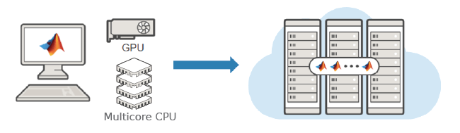

Parallel Computing
Parallel computing with MATLAB provides the language and tools that help you take advantage of more hardware resources, through CPUs and GPUs on the desktop, on clusters, and in the cloud.
Parallelize computations without changing any code as hundreds of functions have automatic parallel support and GPU support.
Write portable parallel code that runs for any user with or without Parallel Computing Toolbox and scale automatically depending on available resources.
Write parallel code once and execute on different cluster environments.
Solve computationally intensive problems using local multicore processors and GPUs or scale up to compute clusters.

Products for Parallel Computing
Topics
Parallel Computing Fundamentals
- Run MATLAB Functions with Automatic Parallel Support (Parallel Computing Toolbox)
Take advantage of parallel computing resources without requiring any extra coding. - Interactively Run Loops in Parallel Using parfor (Parallel Computing Toolbox)
Convert afor-loop into a scalableparfor-loop. - Plot During Parameter Sweep with parfor (Parallel Computing Toolbox)
Perform a parameter sweep in parallel and plot progress during parallel computations. - Quick Start Parallel Computing in MATLAB (Parallel Computing Toolbox)
Learn about parallel computing in MATLAB and Parallel Computing Toolbox™.
Parallel Simulations in Simulink
- Running Multiple Simulations (Simulink)
Run multiple simulations from theparsimandbatchsimcommands, and the Multiple Simulations panel in Simulink Editor.
Using GPUs in MATLAB
- Run MATLAB Functions on a GPU (Parallel Computing Toolbox)
Supply agpuArrayargument to automatically run functions on a GPU.
Scaling Up to Cluster and Cloud
- Scale Up from Desktop to Cluster (Parallel Computing Toolbox)
Develop your parallel MATLAB® code on your local machine and scale up to a cluster. - Use Parallel Computing Toolbox with Cloud Center Cluster in MATLAB Online (Parallel Computing Toolbox)
Run parallel code in MATLAB Online™.
Parallel Computing Applications
- Scale Up Deep Learning in Parallel, on GPUs, and in the Cloud (Deep Learning Toolbox)
Explore options for deep learning with MATLAB in parallel and using multiple GPUs, locally or in the cloud. - Minimizing an Expensive Optimization Problem Using Parallel Computing Toolbox (Optimization Toolbox)
Example showing how to use parallel computing in both Global Optimization Toolbox and Optimization Toolbox™ solvers.
Related Information
Featured Examples

Plot During Parameter Sweep with parfeval
Perform a parallel parameter sweep with parfeval and send results back during computations with a DataQueue object.

Illustrating Three Approaches to GPU Computing: The Mandelbrot Set
Adapt your MATLAB® code to compute the Mandelbrot Set using a GPU.

Run Script as Batch Job
Use batch to offload work to a MATLAB® worker session that runs in the background.

Train Network Using Automatic Multi-GPU Support
Use multiple GPUs on your local machine for deep learning training using automatic parallel support.

Use Distributed Arrays to Solve Systems of Linear Equations with Direct Methods
Solve a system of linear equations of the form Ax=b in parallel with a direct method using distributed arrays.

Measure GPU Memory Bandwidth and Processing Power
Measure some of the key performance characteristics of your GPU hardware.